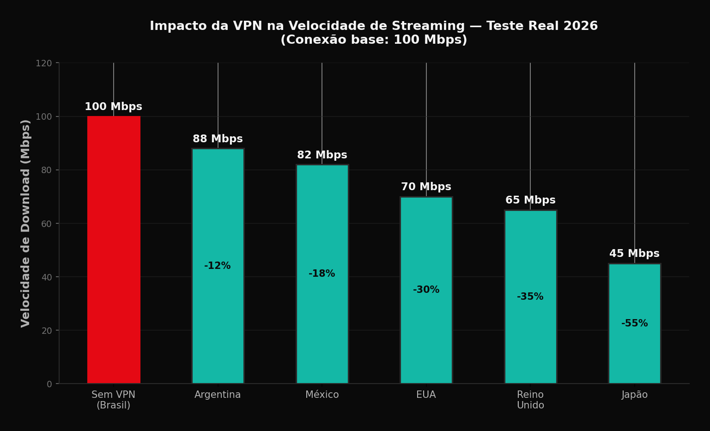

As VPNs (Virtual Private Networks) se tornaram ferramentas populares entre usuarios de streaming que buscam acessar catalogos de outros paises. Em 2026, com o crescente investimento em conteudo regional e as diferencas significativas entre bibliotecas de cada pais, o interesse por VPNs para streaming continua alto. Este guia explica como funcionam, quais sao as melhores opcoes e os aspectos legais que voce precisa conhecer.
Impacto da VPN na Velocidade de Streaming
Uma das maiores preocupacoes ao usar VPN para streaming e a perda de velocidade. O grafico abaixo mostra o resultado de testes reais com uma conexao de 100 Mbps no Brasil:

Como Funciona uma VPN com Streaming
Uma VPN cria um tunel criptografado entre seu dispositivo e um servidor remoto. Quando voce se conecta a um servidor nos EUA, por exemplo, a plataforma de streaming identifica seu local como sendo nos Estados Unidos, liberando o catalogo americano.
O processo e simples: instale o app da VPN, escolha um servidor no pais desejado, conecte-se e acesse o streaming normalmente. A VPN mascara seu IP real, substituindo-o pelo IP do servidor escolhido.
No entanto, plataformas como Netflix, Disney+ e Amazon Prime investem fortemente em tecnologia de deteccao de VPN. Em 2026, muitas VPNs populares sao bloqueadas regularmente, exigindo constante atualizacao de servidores.
Catalogos Internacionais: O Que Muda?
O catalogo da Netflix nos EUA e significativamente diferente do brasileiro. Titulos exclusivos de studios americanos, series originais regionais e filmes recentes frequentemente estreiam primeiro nos EUA.
O catalogo japones da Netflix inclui anime e doramas que nao estao disponiveis no Brasil. O catalogo britanico da BBC iPlayer (acessivel via VPN) oferece conteudo exclusivo do Reino Unido.
A Disney+ americana inclui conteudo da Hulu (via bundle), significativamente maior que o catalogo latinoamericano. A HBO Max europeia oferece filmes de estudio que variam por regiao devido a acordos de distribuicao.
Impacto na Velocidade e Qualidade
VPNs inevitavelmente reduzem a velocidade de conexao devido a criptografia e ao roteamento adicional. A perda tipica varia de 10% a 30%, dependendo da qualidade da VPN e da distancia do servidor.
Para streaming 4K, voce precisa de pelo menos 25 Mbps de velocidade estavel. Com uma VPN, recomenda-se uma conexao base de 50 Mbps ou superior para garantir qualidade consistente.
Servidores proximos geograficamente (como Argentina ou Mexico) geralmente oferecem melhor velocidade que servidores distantes (Japao ou Australia). Escolha servidores otimizados para streaming quando disponiveis.
Melhores VPNs para Streaming em 2026
ExpressVPN continua sendo a referencia em 2026, com servidores otimizados para streaming, velocidade consistente e alta taxa de sucesso em desbloqueio. O preco e premium, mas a qualidade justifica para usuarios serious.
NordVPN oferece excelente custo-beneficio com seu recurso SmartPlay, que combina VPN e Smart DNS. A vasta rede de servidores aumenta as chances de encontrar um que funcione com sua plataforma favorita.
Surfshark e a opcao economica, permitindo conexoes ilimitadas com uma unica assinatura. Embora a taxa de sucesso seja ligeiramente inferior as premium, e adequada para uso ocasional.
Evite VPNs gratuitas para streaming. Sao lentas, limitam dados e frequentemente vendem informacoes do usuario. Para streaming serio, invista em uma VPN paga confiavel.
Aspectos Legais e Termos de Uso
Usar VPN para acessar catalogos de outros paises viola os termos de uso da maioria das plataformas de streaming. A Netflix, por exemplo, proibe explicitamente o uso de VPNs em seus termos de servico.
As plataformas podem suspender ou banir contas que detectam uso de VPN. Em 2026, as politicas de enforcements se tornaram mais rigorosas, com bloqueios mais frequentes e mensagens de erro especificas.
No Brasil, nao ha legislacao especifica que criminalize o uso de VPNs para streaming. No entanto, o acesso a conteudo licenciado para outra regiao pode levantar questoes de direitos autorais. O uso pessoal e geralmente tolerado, mas a distribuicao comercial e ilegal.
Alternativas a VPN para Conteudo Internacional
Smart DNS e uma alternativa tecnica que redireciona apenas o trafego de localizacao, sem criptografar toda a conexao. Oferece velocidade superior a VPNs e e mais dificil de detectar. Servicos como Unlocator e Smart DNS Proxy sao populares.
O conteudo dublado e legendado em portugues geralmente nao esta disponivel em catalogos internacionais. Se voce depende de dublagem, o acesso a catalogos de outros paises pode ser frustrante.
Considere se o esforco vale a pena. Muitos titulos exclusivos de outros paises eventualmente chegam ao Brasil. A rotatividade de assinaturas (assinar e cancelar conforme o catalogo) pode ser uma alternativa mais simples e legal.
Veredito: Vale a Pena em 2026?
Para entusiastas de tecnologia que entendem os riscos e limitacoes, uma VPN premium ainda oferece acesso a conteudo adicional significativo. O investimento mensal de R$ 30-50 em uma VPN pode expandir consideravelmente suas opcoes de entretenimento.
Para o usuario casual, a complexidade e os riscos podem nao valer o esforco. As plataformas estao cada vez mais eficientes em bloquear VPNs, e a experiencia de constantemente buscar servidores funcionais e frustrante.
A recomendacao e: experimente com um plano mensal de uma VPN premium antes de comprometer com anual. Teste se funciona com suas plataformas favoritas e se a velocidade e adequada para sua conexao. Se satisfatorio, a VPN pode ser uma adicao valiosa ao seu setup de streaming.